Ton assistant d'arbitre. Il lit tes convocations, construit ton calendrier, calcule tes indemnités et tes frais réels, suit chaque paiement, prévoit ce que ta saison va te rapporter, prépare tes rapports et t'aide à progresser.
| Tu veux… | Va dans… | Ce que l'app fait pour toi |
|---|---|---|
| Savoir où et quand tu arbitres | Accueil, 5×5, 3×3 | Matchs, heure de rendez-vous, départ conseillé, itinéraire |
| Savoir ce qu'on te doit | Paiements | Montant par payeur, date prévue, retards |
| Savoir ce que tu gagnes vraiment | Analyse | Indemnités moins carburant et usure |
| Prévoir ta saison | Estimation | Projection au 30 juillet, avec fourchette |
| Gérer un déplacement avec nuit | Hôtel | Coût, remboursement, net du week-end |
| Remplir un rapport officiel | Rapports | Formulaire FFBB pré-rempli, assistant de rédaction, PDF officiel |
| Progresser | QCM, Progression, Règlement | Entraînement, plan de développement, réponses de règles |
| Garder tes documents | Mon espace | e-Licence, procédures, contacts |
La fédération, la ligue ou le comité t'écrit.
Ta règle la renvoie vers prenom@referee-tracker.fr.
Date, salle, équipes, rôle, collègue, payeur, indemnité, kilomètres.
En 1 à 5 minutes, avec une notification.
| Type de mail | Ce que l'app fait |
|---|---|
| Nouvelle désignation | Crée le match |
| Modification | Met à jour l'horaire, la salle ou le collègue, et te prévient |
| Annulation | Passe le match en « Annulé » : il sort de tous les calculs |
| Convocation 3x3 (organisateur, comité) | Transfère simplement le mail : l'app lit l'événement, le lieu, ton créneau (demi-journée ou journée) et l'indemnité, puis calcule les km |
| Mail ambigu | Crée une alerte « À régler » plutôt que d'inventer |
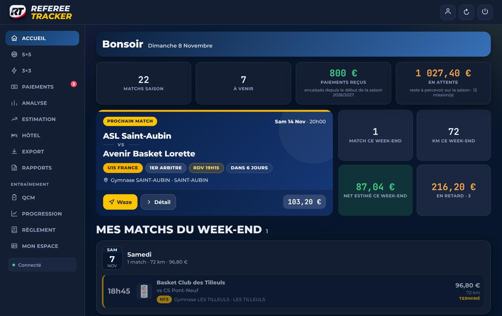
Équipes, niveau, rôle, heure de rendez-vous, compte à rebours, montant, boutons Waze et Détail.
Dans les 3 heures avant un match : l'heure à laquelle partir (trajet réel + marge, réglable).
Nom et téléphone s'ils figurent sur la convocation, avec un bouton « Contacté » qui arrête les rappels.
Ton niveau le plus haut ressort en jaune sur toutes les cartes.
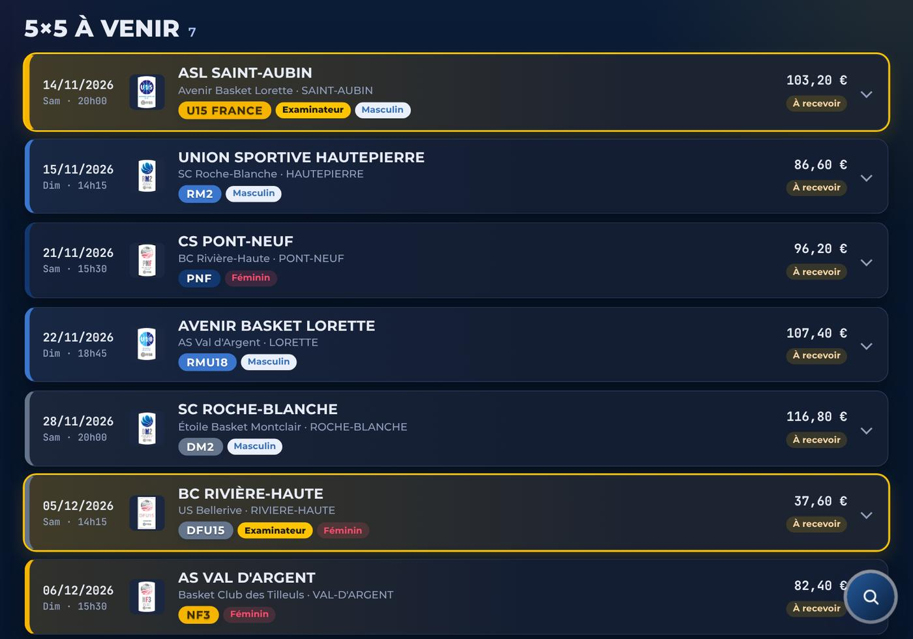
La part fixe est lue sur la convocation, ou prise dans le barème de ton comité. Exemple (fictif) : NF3 à 72 km aller-retour → 68 € + 72 × 0,40 € = 96,80 €.
| Action sur un match | Effet |
|---|---|
| Waze / Plans | Itinéraire depuis ton adresse de départ |
| Payé sur place / Marquer reçu | Enregistre le paiement, même partiel |
| Hôtel | Associe une nuit à ce match |
| Annuler / rétablir | Retire ou remet le match dans les calculs |
| Corriger un montant | Ta correction est gardée et prioritaire |
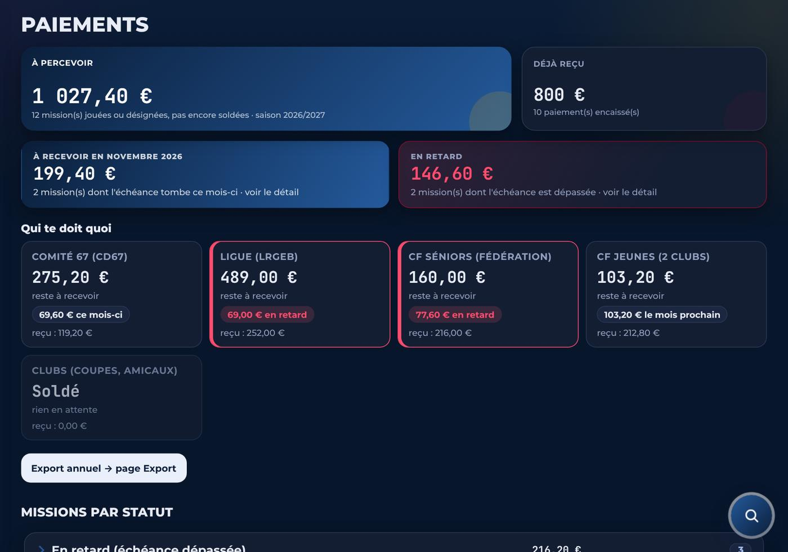
| Statut | Signification |
|---|---|
| À recevoir | Match joué, paiement attendu à la date prévue |
| En retard | Date dépassée : une alerte apparaît |
| Reçu | Paiement marqué reçu |
| Payé sur place | Espèces ou chèque le jour du match |
| Bénévole | Rencontre sans indemnité |
Chaque payeur a sa règle : échéancier du comité par périodes, calendrier de la ligue, délai de la fédération pour le Championnat de France, paiement en salle ou virement sous 30 jours pour les clubs.
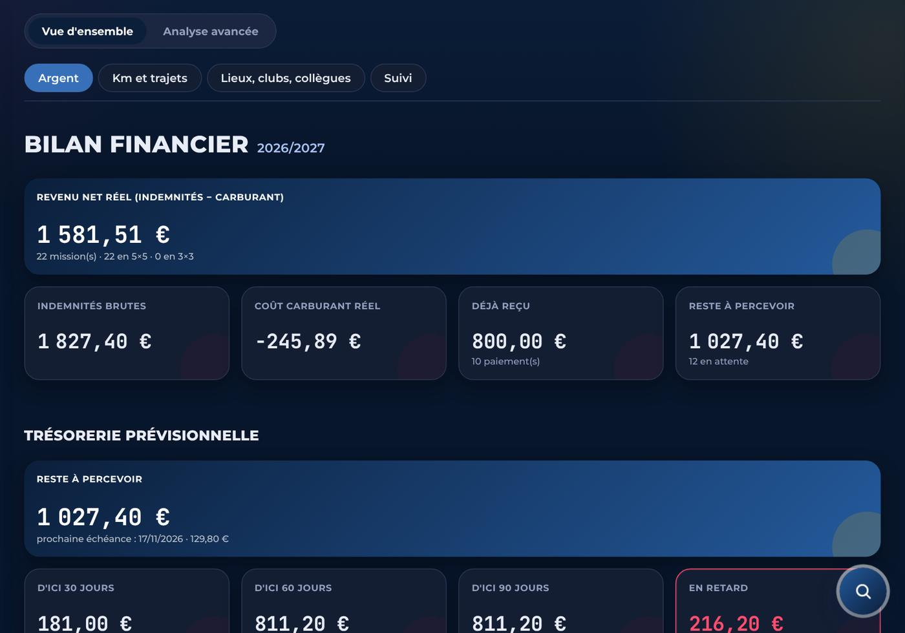
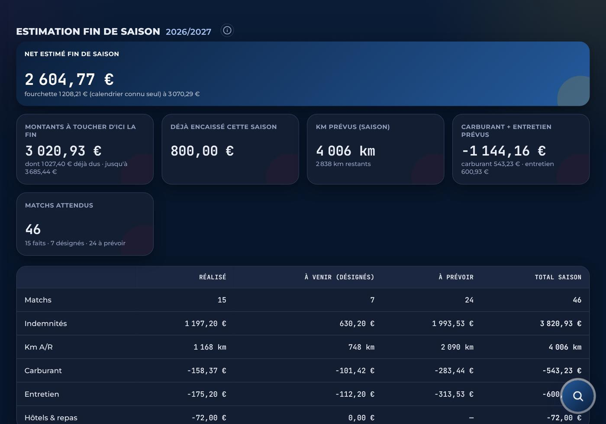
| Indicateur | Calcul |
|---|---|
| Revenu net réel | Indemnités − carburant (km × consommation × prix du carburant du mois autour de chez toi) |
| Usure / entretien | km × coût d'entretien au km (réglable) |
| Distance d'équilibre | Au-delà, une mission te coûte plus qu'elle ne rapporte |
| Trésorerie | Ce qui doit arriver d'ici 30, 60 et 90 jours, et ce qui est en retard |
Matchs joués, comptés exactement.
Matchs déjà désignés, comptés exactement.
Ton rythme de l'an dernier, ajusté sur ton rythme actuel. Fourchette basse et haute.
Un seul chiffre « net estimé fin de saison » existe dans toute l'app : chaque nouvelle désignation le recalcule.
Pour les déplacements avec nuit : ajoute la nuit (prix, repas, facture), rattache-la au match, suis le remboursement. L'app calcule le net du week-end : indemnités − carburant − hôtel − repas.
Le menu n'apparaît que s'il y a quelque chose à régler.
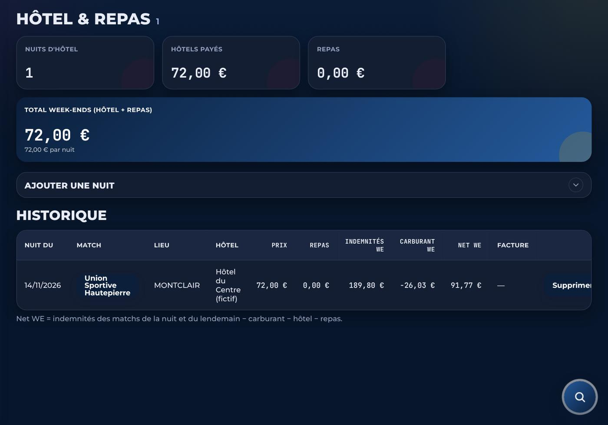
| Export | Usage |
|---|---|
| PDF de saison ou de mois | Récapitulatif pour toi, un comité ou ta déclaration de revenus |
| Année civile / plage de dates | Missions de la période, totaux par payeur et par mois |
| CSV / Excel | Toutes les colonnes, pour tes propres calculs |
| Carte des salles | Les salles où tu as arbitré, avec le nombre de passages |
Les exports sont produits sur ton appareil : rien n'est envoyé ailleurs.
Incident disciplinaire, faute disqualifiante avec rapport, réclamation, incident matériel, protocole commotion : le PDF produit est le formulaire officiel, rempli aux bons emplacements.
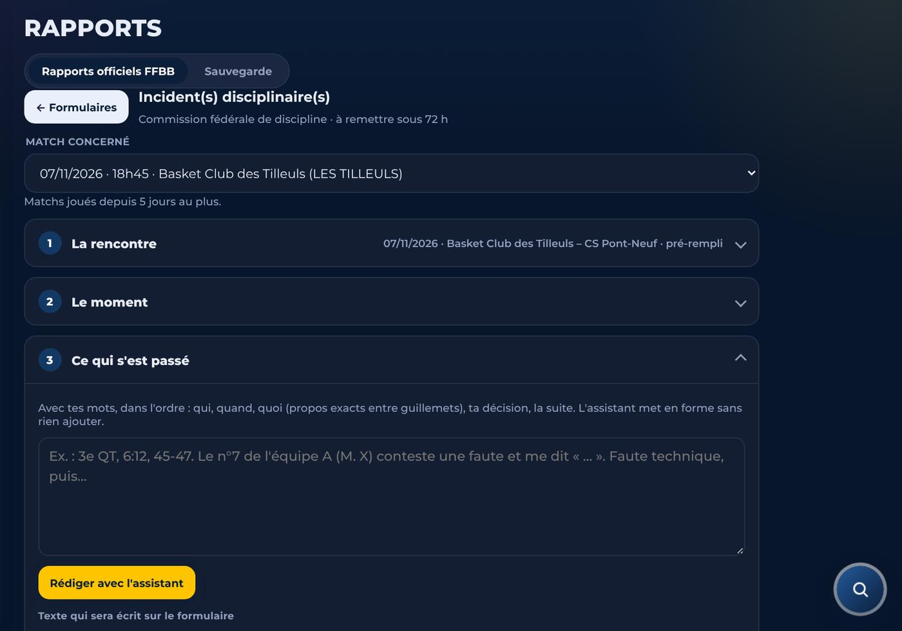
| Module | Fonctionnement |
|---|---|
| QCM entraînement | 20 questions, correction après chaque réponse avec l'extrait du règlement |
| QCM examen | 20 questions en 10 minutes, résultat enregistré |
| Progression | Tes fiches d'observation (PDF) lues et analysées : notes, familles, évolution |
| Règlement | Pose une question, ou raconte une action de ton match : réponse avec les articles, la bonne procédure et comment progresser |
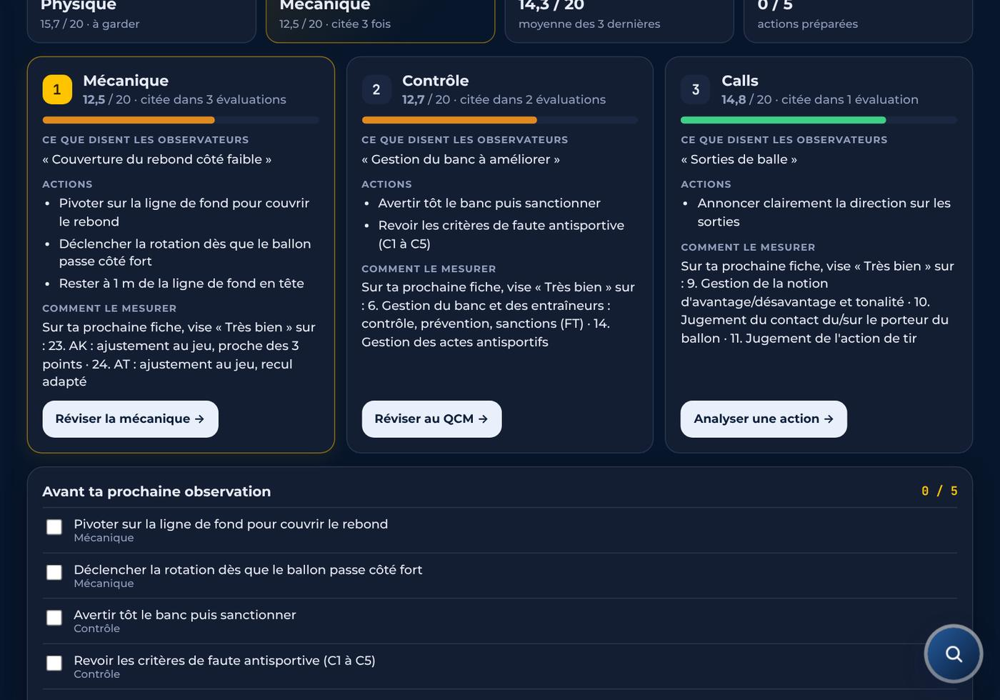
Construit à partir de tes 3 dernières observations : ce que disent les observateurs, les actions à mener, les critères à viser sur la prochaine fiche. Coche les actions au fur et à mesure.
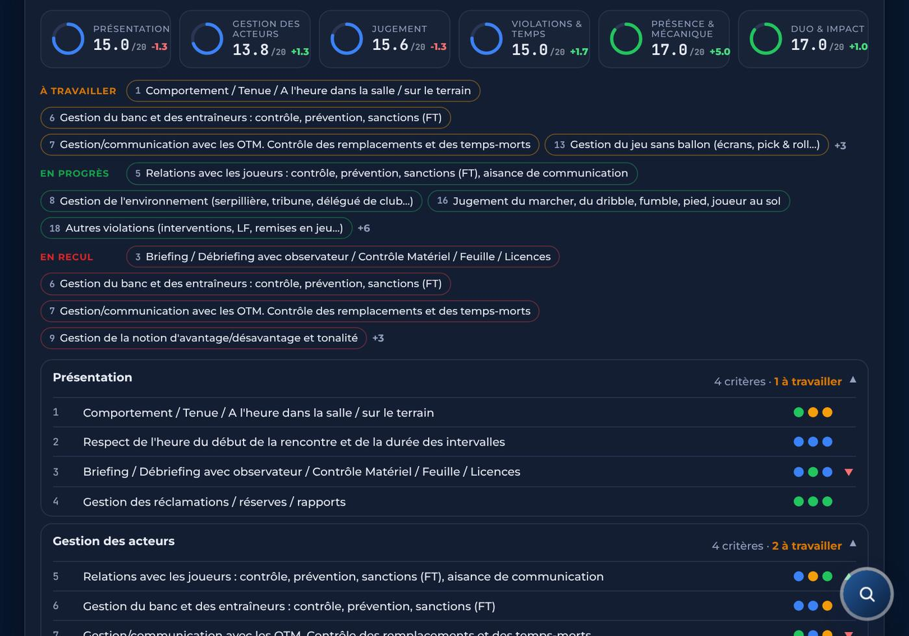
Chaque mention devient des points : Insuffisant 5, À améliorer 10, Bien 15, Très bien 20. La note d'une famille est la moyenne de ses critères, comparée à l'observation précédente.
Présentation (1-4), Gestion des acteurs (5-8), Jugement (9-16), Violations et temps (17-19), Présence et mécanique (20-24), Duo et impact (25-29).
Ce n'est pas une note officielle : c'est un repère pour suivre ta progression.
| Mon espace | Contenu |
|---|---|
| e-Licence | Ta licence en plein écran à la table de marque, et ta clé e-Marque V2 |
| Procédures | Indisponibilité, absence, discipline… avec le bon contact |
| Contacts | Répartiteurs, commissions, formateurs. Un appui affiche le numéro ou l'e-mail, avec Copier et Appeler |
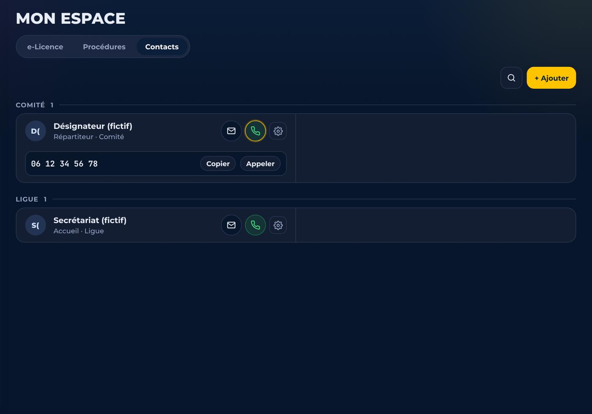
| Mon profil | Contenu |
|---|---|
| Identité, adresse, zones | Nom officiel, niveau, adresse de départ, comité, ligue, Championnat de France |
| Véhicule et tarifs | Consommation, taux kilométrique, prix du carburant, entretien |
| Agenda | Lien pour Calendrier, Google Agenda ou Outlook, mis à jour tout seul |
| Cet appareil | Notifications (bouton Tester), départ conseillé, thème clair ou sombre |
| Communications | Nouveautés et offres par e-mail et WhatsApp : décoche ce que tu ne veux plus recevoir |
| Double authentification | Facultative : un code à 6 chiffres en plus du mot de passe |
| Mes données | Export de toutes tes données, suppression du compte |
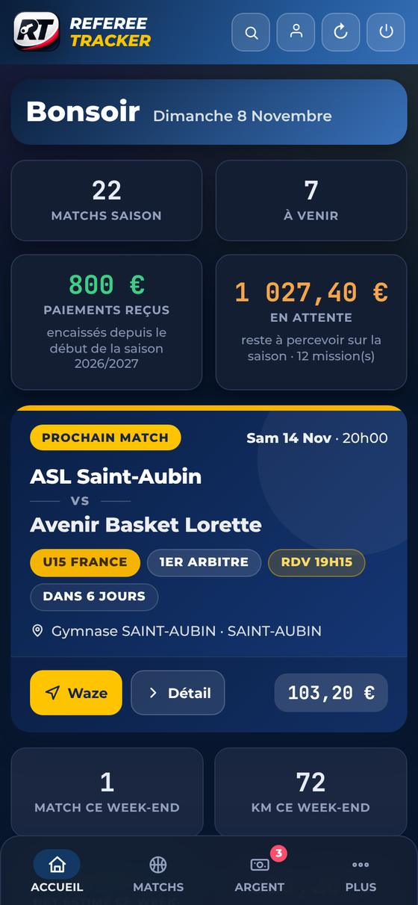
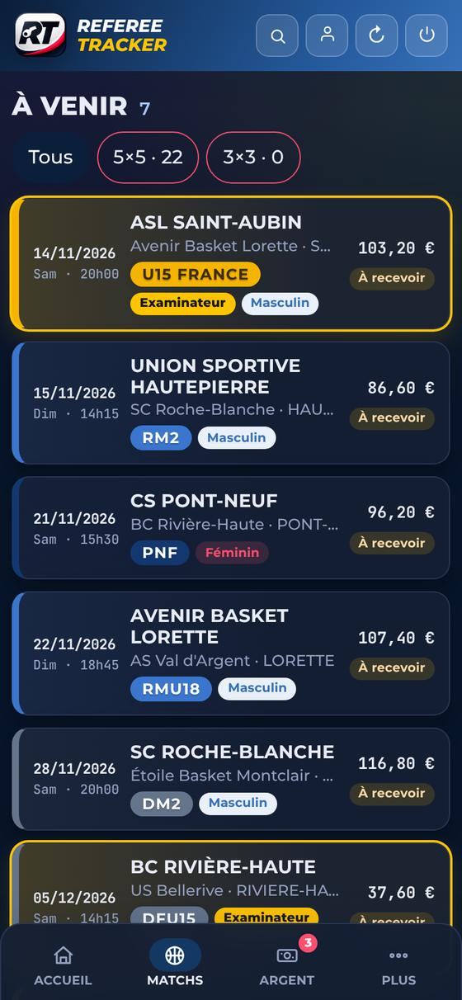
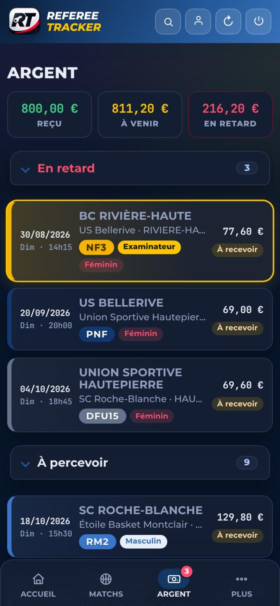
| Question | Réponse |
|---|---|
| Qui voit mes données ? | Toi seul. Toute intervention technique de notre part est journalisée |
| L'app lit-elle ma boîte mail ? | Non : seulement les convocations que tu lui transfères |
| Où sont-elles stockées ? | Dans l'Union européenne, sauvegardées chaque nuit, chiffrées |
| Rester connecté | Ton navigateur mémorise le mot de passe ; l'app le redemande après 5 jours sans ouverture |
| Récupérer ou supprimer | Mon profil → Mes données, ou rgpd@referee-tracker.fr |
| Problème | Solution |
|---|---|
| Mon tournoi 3x3 n'apparaît pas | Sa convocation vient souvent d'un organisateur : ta règle FFBB ne la voit pas. Transfère le mail à la main à ton adresse Referee Tracker |
| Un match n'apparaît pas | Vérifie la règle de transfert, puis Alertes → Infos ; transfère la convocation à la main |
| Mauvais montant | Ouvre la carte du match et corrige ; signale-le-nous |
| Mauvais kilomètres | Vérifie ton adresse de départ dans Mon profil |
| Paiement en retard à tort | Ouvre le match → Marquer reçu |
| L'app semble ancienne | Ferme-la complètement et rouvre-la : la mise à jour s'installe |
| Pas de notifications | Mon profil → Cet appareil → Tester ; sur iPhone, ouvre l'app depuis son icône |
| Mot de passe redemandé | Normal après 5 jours sans ouvrir l'app : tes données sont intactes |
| Code de double authentification refusé | Vérifie que l'heure du téléphone est automatique ; le code change toutes les 30 secondes |